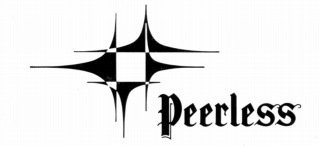
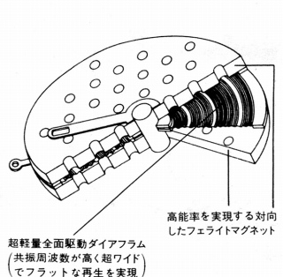
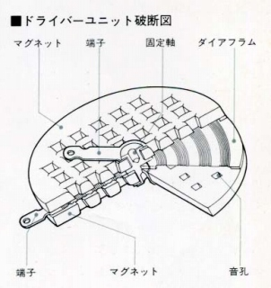
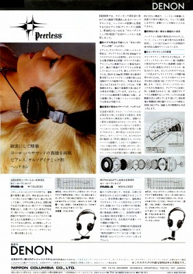
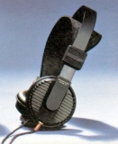
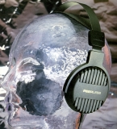
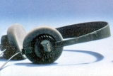
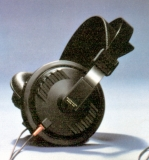

PEERLESS （ピアレス）
1926年創業のデンマークのスピーカー・ユニット製造メーカー。同じデンマークのスピーカーメーカーであるVifaに1995年に吸収される。更に2000年にScan-Speakと統合しDanish Sound Technology(DST)となる。そして、2005年にはTymphanyとDSTが合併し、Tymphanyが存続会社になり現在に至る。現在でもブランドとしては存続し、最近の製品ではPiegaが同社のユニットを使用していることを大きく謳っている。古くは、日本のデンオン（現デノン）が1975年に同社のユニットを使用したスピーカー(SC-107など）を出していた。
1970年代後半には、本国デンマークのほかに、アメリカとドイツに生産拠点を持っており、ドイツ工場製のヘッドフォンが、デンオン（現デノン）によって輸入されていた。ヤマハのヘッドフォンと同じ「オルソダイナミック型」の製品であり、当時の資料を見る限り、こちらが「本家」のような印象を受ける。
＊ピアレスとヤマハの関係について
当時の広告(*1)を見る限り、ピアレスの方が「本家」のような印象を受ける。ヤマハは「オルソダイナミック型」自体については、発売当時からカタログで「特許」「開発」「発明」等の言葉を使っていない(*2)。ちなみにマリオ・ベリーニによる「デザイン」については「発明」(*3)としていたことがある。
現時点では明確な判断はできないが、近年(2013年5月）入手したデンオン（現デノン）のカタログの記載から、当サイトではPEERLESS （ピアレス）の方を「オルソダイナミック型」のオリジネーターと判断した。デンオンのカタログには「特許」と表現され、また基本構造がヤマハと酷似しており、さらに上位モデル（ヤマハ＝HP-1、ピアレス＝PBM-8）が55�o径のダイヤフラムに5層コイル、下位モデル（ヤマハ＝HP-2、ピアレス＝PBM-6）が46�o径のダイヤフラムに4層コイル、と共通であった。（ただし使用しているベースフィルム厚や磁石の磁束密度は違うので、全く同じではないようだ）


（左がピアレスの構造図、右がヤマハの構造図）

�T.日本に輸入された製品
確認できた範囲では、日本に輸入されたのは「オルソダイナミック型」の2機種のみ、のようだ。
 
�U.日本に輸入されなかった製品
日本に輸入された「オルソダイナミック型」の2機種と同時代には、通常のダイナミック型ヘッドホンも作っていた。最近（2016年4月）、当時の海外資料を入手したので、掲載機種を紹介する。 PMB-2、PMB-20はゼンハイザーHD414のようなスポンジ・イヤパッドのモデル、PMB-4、PMB-40は大型の通常のイヤパッドのモデルでPMB-4がセミ・オープン型、PMB-40は密閉型らしい。


（左 PMB-2 右 PMB-40)